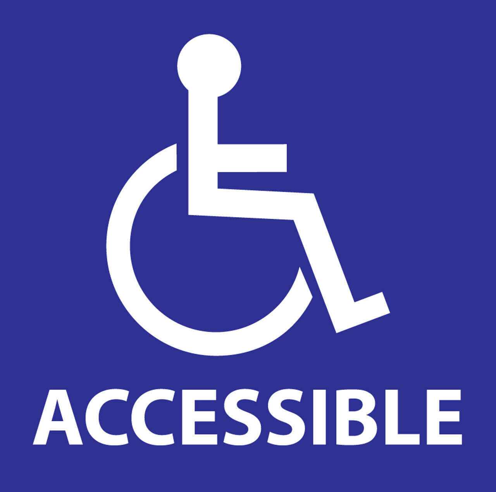

Wheelchair Friendly
All areas of our farm have been certified to be wheelchair friendly by AccessAssured UK.
All areas of our farm have been certified to be wheelchair friendly by AccessAssured UK.
Listen in on talks by our fantastic staff thanks to dedicated hearing induction loops placed around the farm.
Guide dogs are more than welcome at Paws and Hooves. Just ask our staff for water bowls or even a sneaky treat.
Signage and information points all have braille to allow visually impaired visitors to get around.